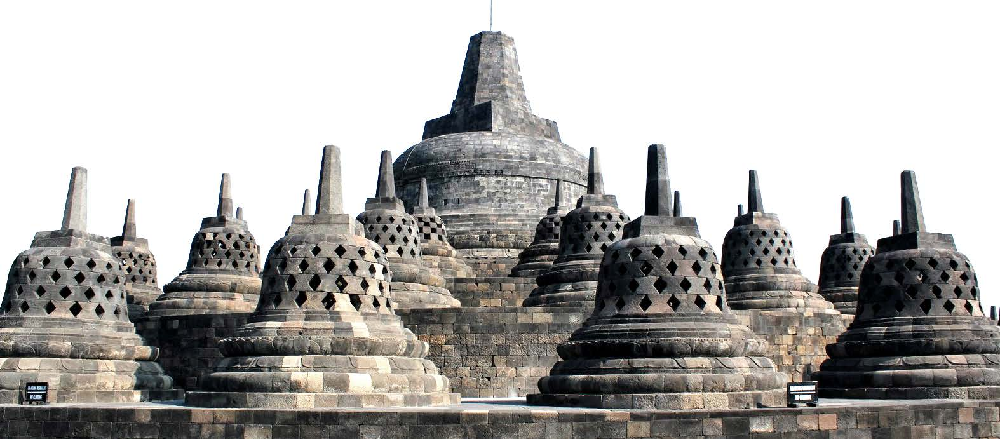

| Monas | |||
|
|
|||
| Kota Tasikmalaya | Kota Yogyakarta | ||
|
|
|||
| Candi Borobudur | Tirta Alam | Jepang | Kyoto |
|  |
|
|
|
Monas, atau Monumen Nasional, adalah menara setinggi 132 meter yang terletak di pusat Lapangan Merdeka, Jakarta Pusat. Monumen ini melambangkan perjuangan kemerdekaan Indonesia.
Kota Tasikmalaya adalah sebuah kota di provinsi Jawa Barat, Indonesia. Terkenal dengan keindahan alam dan budayanya, Kota Tasikmalaya menawarkan berbagai tempat wisata menarik seperti pantai, danau, dan taman nasional.
Kota Yogyakarta, sering disebut Jogja, adalah sebuah kota budaya di Indonesia. Kota ini terkenal dengan keraton, candi-candi kuno seperti Candi Prambanan dan Borobudur, serta keanekaragaman kulinernya.
Candi Borobudur adalah candi Buddha terbesar di dunia, terletak di Magelang, Jawa Tengah. Candi ini merupakan warisan budaya UNESCO dan dikenal dengan struktur stupa yang megah serta relief yang menggambarkan ajaran Buddha.
Tirta Alam adalah sebuah tempat wisata alam yang menawarkan pemandangan indah dan kegiatan outdoor. Terletak di kawasan hijau yang sejuk, Tirta Alam cocok untuk relaksasi dan menikmati keindahan alam.
Jepang, negara kepulauan di Asia Timur, terkenal dengan budayanya yang unik, teknologi canggih, dan keindahan alamnya seperti gunung Fuji dan taman-taman bunga sakura. Jepang juga dikenal dengan makanan khasnya seperti sushi dan ramen.
Kyoto adalah kota di Jepang yang dikenal dengan warisan budaya yang kaya, termasuk kuil-kuil kuno, taman-taman tradisional, dan festival-festival musiman. Kyoto merupakan pusat budaya Jepang dengan arsitektur tradisional yang mempesona.